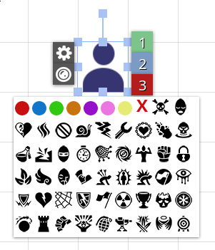
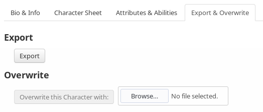
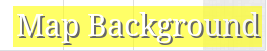
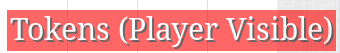

Features
Disable Player Drawing
Disables the drawing/text tools for certain players. Only the GM needs to have the extension installed for this to work. WARNING: This will load all pages in your game and may cause performance issues or loading slowdowns.

Disable/Enable drawing permission button
Token Status Display Adjustments
Allows adjusting how status icons are displayed on tokens.

Idle & opaque status icons displayed outside of the token.
Libre Audio
Allows creation and playback of tracks via their URL. Removes the 16 listener cap on My Audio Tracks. Refreshing the page is recommended after disabling/enabling this module in order to avoid issues. Players need to have VTTES installed to hear tracks added via Libre Audio.

Add by URL button
Create Token From URL
Allows creating tokens on the canvas by right-clicking the canvas and pressing "Create Token from URL"
Adjustable GM Layer opacity
Allows adjusting the opacity of the GM layer.
Remember Text Tool Settings
Remembers the last used settings for the text tool.
Animated Background
Displays an animated background if the GM has one set up for the page. Setup can be found in the top-right corner, look for a orange film button. Players need to have VTTES installed to see animated backgrounds.
Setup & usage
Open Turn Tracker On Initiative
Automatically opens the turn tracker when somebody rolls initiative.
Alternative Token Radial Menu
Replaces the default token radial token menu with a more compact and simplistic one.
Reworked radial menu
Compact version
Arrow Key Camera Controls
Allows the camera to be moved by pressing the arrow keys as long as a token is not selected
Alternative Page Toolbar Menu
Replaces the default page toolbar menu with a more concise one. Right clicking the name of the page will enable you to edit it. Vivaldi users: double right-click to edit name.

Alternative page toolbar menu on the right side.
Disable Animations
Disables animations: token radial menu opening, page toolbar menu opening/close.
No token radial menu animation
Ping Visible Token
When advancing initiative, this module will automatically ping the next token only if it is in the player token layer.
Automated pinging
Select Token
When advancing initiative, this module will automatically select the next token in the initiative order.
Automated token selection
Automatically Sort Initiative
Automatically sorts initiative order when a new token has been added to it by any player. After the list has been sorted, it is reorganized so that the token that was first in the list before the sort is still the first in the list after the sort.
Initiative being sorted automatically.
Bulk Macros
Adds a "Bulk Macros" option to the token right click menu which lists macros that can be rolled for the whole selection in bulk.
Rolling initiative for 3 tokens at once
Token Counter
Adds an option to the token right-click menu that will add an increasing counter to the name of all selected tokens. Submitted by OLStefan.
Reassign "Represents" when duplicating
When duplicating a character in the journal and if that character has a default token, this module will reassign the "Represents" value of that default token to the newly duplicated character.
Journal Importer/Exporter
Provides character, handout and character component (i.e weapons, spells, items etc) importing and exporting (in the journal and on sheets).
Journal widget
Sheet tab
Force Background Color
Force a certain background. The night mode is deprecated in favor of RedReign's Dark Theme.
Display Current Layer on Canvas
Displays the current edit layer and whether the select tool is active.
GM layer identifier
Page layer identitifer
Player token layer identifier
"Duplicate" in the Journal Context Menu
Adds a "Duplicate" entry, functioning as a shortcut to duplicate button found in the edit page of sheets, to the context menu of items found in the journal.
The duplicate button
Advance Initiative Shortcut
Creates a shortcut for advancing (Ctrl+Right Arrow) in the initiative list. Advanced shortcuts must be enabled for this to work. See https://wiki.roll20.net/Advanced_Shortcuts
Jukebox Importer/Exporter
Allows exporting and importing of jukebox playlists. Controls can be found in the "Jukebox" sidebar tab.
Character Sheet Ability Macro Generator
Places a "Generate" button in the Attributes & Abilities that will open up the generate ability macros dialog. Only certain character sheets are supported. If you'd like to add your own sheet, submit a GitHub PR.
Character Token Editor
Adds a tab to character sheets that provides a quick way to create and modify character tokens.

The editor being used to view a Adult Brass Dragon token.
Player Macro Importer/Exporter
Allows exporting and importing of player macros and the macro bar. Controls can be found in the "Collection" sidebar tab.

Collection sidebar widget
Mouse Click to Switch to Token Layer
This module allows the use of mouse clicking (default mouse3/scroll wheel) on a token. Doing so will switch the current edit layer to the layer of the token.
Middle-clicking on a token in the GM layer with select token option on when the current edit is player tokens .
Move Camera to Token
When advancing initiative, this module will move your camera to the next token in the initiative order. This camera movement is local, meaning other players will not have their camera moved.
Camera moving between 4 tokens
Roll & Apply Hit Dice
Adds a "Hit Dice" option to the canvas token context menu which will roll and apply hit dice for the selected group of tokens.
Rolling & Applying hit dice for a single token then a group of 3.
Table Importer/Exporter
Provides rollable table importing and exporting. Supports TableExport format tables. Controls can be found in the "Collection" sidebar tab.

Collection sidebar widget.
Token Resize
Allows you to quickly resize map tokens to fit the canvas size or to fit a specific grid size.
Two map tokens being resized to fit the canvas.
Draw Token Layer on Tokens
Draws an indicator at the bottom left of each token that indicates which layer it is on.

A token in the map layer
A token in the player token layer

A token in the GM layer
Transparent Canvas UI Dialogs
Provides a way to set the opacity of floating UI dialogs.

A transparent edit token dialog.
Hide Player List
Hides the player list.
Set Rollable Table Avatar By Url
Allows setting the images/avatars of rollable table entries by an image url.

Use this button in the table entry dialog.
Performance Improvements
Attempts to improve performance.
Set Character Avatar from URL
Allows you to set the character avatar image via a URL.
Set avatar image from URL button.
Default Camera Starting Position
Allows GMs to set the default camera start position to a custom location on the map so that players will see that area first. Players MUST have the extension installed for this to work for them.

Setup UI.
Set Handout Image from URL
Allows you to set the handout image via a URL.
Set handout image from URL button.
Custom Line Widths
Allows you to set a custom line width for drawing.
Extra Rulers
Adds radius, box, thick line and cone ruler options. Other players need to have VTTES installed to see them.

Two of the extra rulers.
Welcome
The welcome popup message.